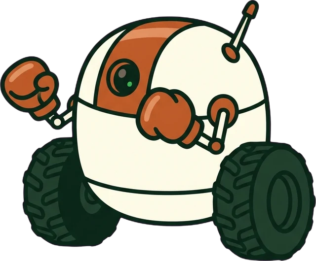

Accueil › Duels › A1 Pro / Yuka Mini 2
Dreame A1 Pro ou Yuka Mini 2 ?

Duel mis à jour le 15 novembre

Quelle est la taille de votre pelouse ?
Notre verdict
Prenez le Dreame A1 Pro. Sa batterie couvre 1 200 m² sans y passer la journée, et il fait 7 dB de moins.
Prenez le Yuka Mini 2. Vous gardez 250 € et il grimpe mieux : 50 % de pente annoncés contre 45 %.
Lequel a la meilleure note ?
Dreame A1 Pro 8,0
8,0
8,0Mammotion Yuka Mini 27,9
7,9Un dixième d’écart : la note ne les départage pas. La surface et la pente de votre jardin, si.
Où chacun prend-il l’avantage ?
À gauche le Dreame, à droite le Yuka.
- 23Navigation · sur 2521
- 17Surface et autonomie · sur 2013
- 13Terrain et pente · sur 2017
- 14Sécurité et bruit · sur 1512
- 8Entretien · sur 108
- 5Prix · sur 108
| Sur le papier | A1 Pro | Yuka Mini 2 |
|---|---|---|
| Surface conseillée | 1 200 m² | 800 m² |
| Pente annoncée | 45 % | 50 % |
| Bruit annoncé | 48,5 dB | 56 dB |
| Prix du jour | 1 049 € | 799 € |
Cdiscount · prix relevé le 15/11 à 7 h · lien partenaire